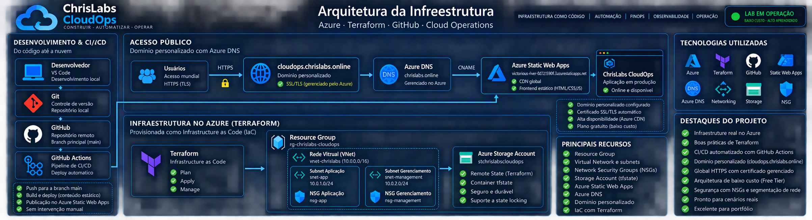

STATIC WEB APP ONLINE
Azure Static Web AppsFrontend do projeto no plano Free.
Projeto de portfólio focado em Infrastructure as Code, arquitetura Azure, automação, segurança, FinOps e operação visual.
Frontend do projeto no plano Free.
Backend remoto em Azure Storage.
Segmentação com subnets e NSGs.
Ambiente de estudo e portfólio.

O diagrama representa a infraestrutura atualmente implementada no laboratório. Os fluxos animados são uma representação visual da relação entre os componentes.
Abordagem inicialmente avaliada.
Restrição encontrada durante o laboratório.
Revisão da alternativa alinhada ao objetivo.
Hospedagem escolhida para o frontend.
IMPLEMENTADO